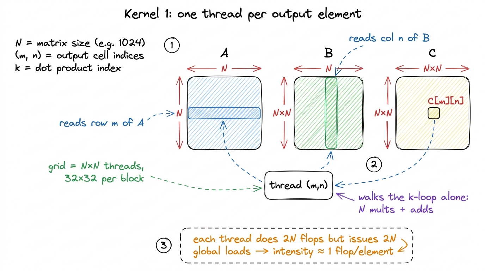
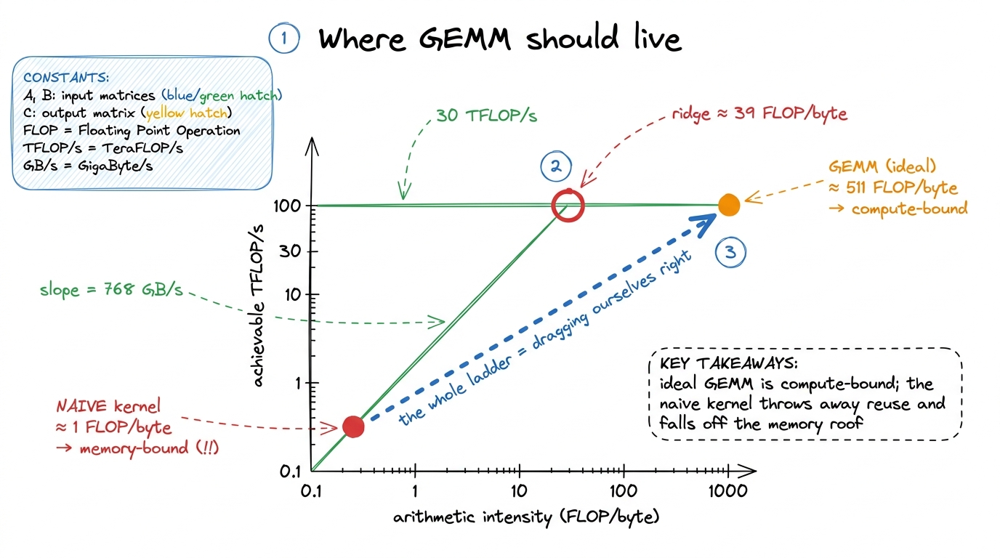
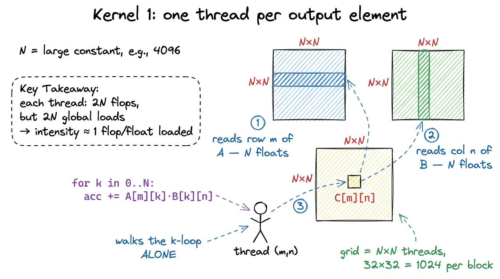
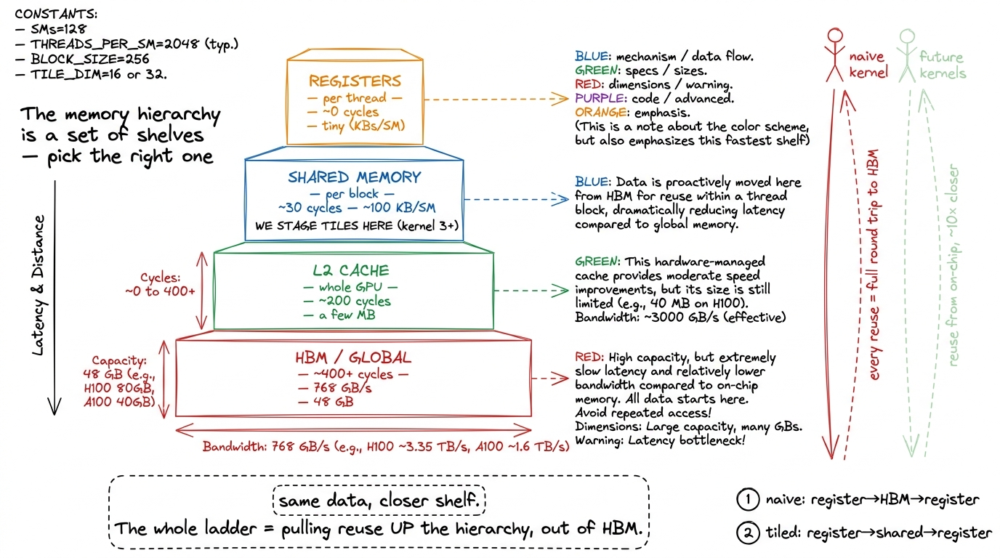
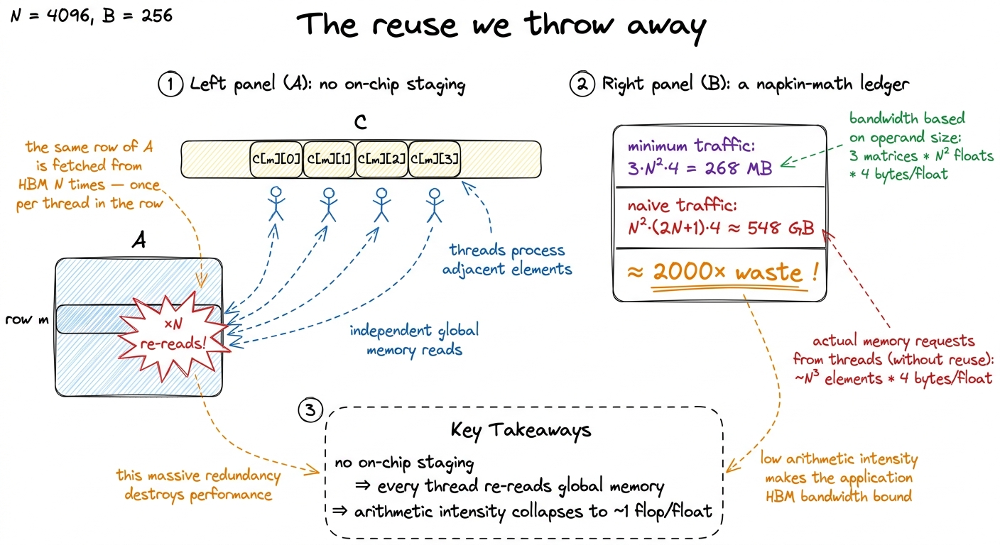
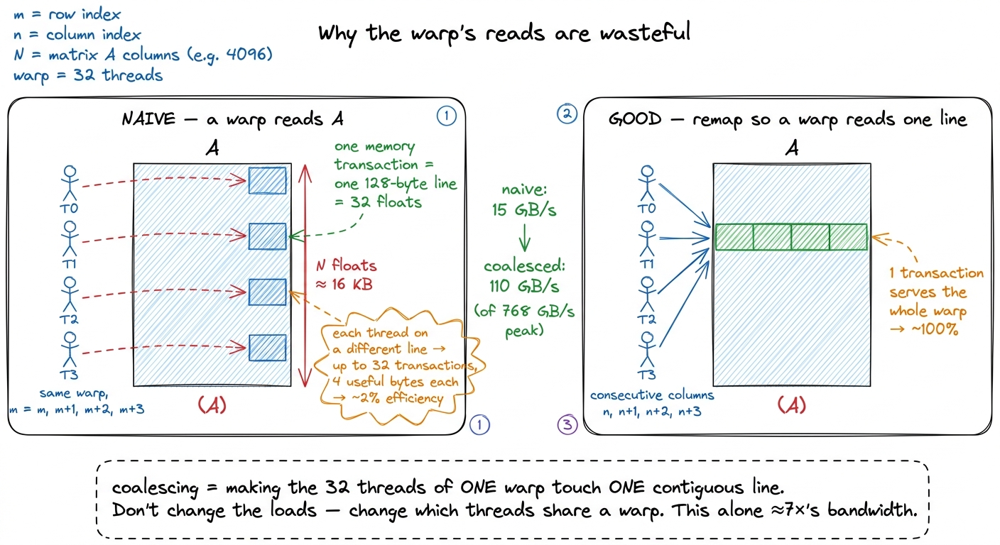
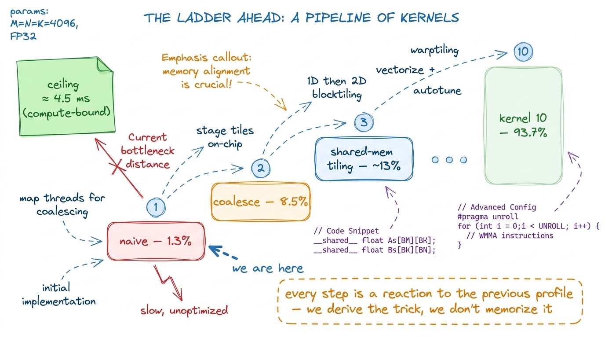

Kernel 1: Naive 1.3%
Matrix multiplication sits at the core of modern deep learning. Every linear layer is a GEMM. Every attention score is a GEMM. Every MLP, every projection, every logit — a matrix multiply underneath. When an H100 draws 700 watts serving a language model, most of those watts are spent multiplying matrices. So if you want to understand GPUs, this is the thing to learn kernels on.
And it is a wonderful thing to learn on, because the math is almost insultingly simple. Three lines. A schoolchild can do it by hand. Yet the gap between the version you would write on your first try and the version NVIDIA ships in cuBLAS is a factor of roughly seventy. Seventy times. Same math, same hardware, same numbers going in and out — one is 70× faster. Closing that gap, one small change at a time, teaches you almost everything there is to know about how a GPU actually works.
This article is kernel 1 of that ladder. Its job is not to be fast. Its job is to be the dumbest correct thing we can write, so that we have an honest baseline and a first profile to react to. Everything that follows on the ladder is a reaction to a measurement — and this is where we take the first measurement.
Before we write a line of it, though, let me make sure we agree on what a matrix multiply even is, because everything downstream hangs on it.
What GEMM actually computes
GEMM stands for GEneral Matrix Multiply. We want C = A · B. To keep the arithmetic clean we will use square matrices: A and B are both N × N, and so is the result C. Every number is a 32-bit float (FP32), which is 4 bytes.1 FP32 is the honest starting point. Real training and inference run in bf16, fp8, or fp4 on tensor cores, which changes the numbers but not one bit of the reasoning in this article. We build intuition in FP32 first, then port it to lower precision later on the ladder.
Here is the whole definition, written as plain nested loops:
for m in 0..N:
for n in 0..N:
acc = 0
for k in 0..N:
acc += A[m][k] * B[k][n]
C[m][n] = accRead it slowly. Every output element C[m][n] is a dot product: you slide across row m of A and down column n of B, multiply the pairs, and add them up. One output cell, N multiplies and N adds.
Let me make that concrete with the tiniest example that isn't trivial. Take N = 2:
A = [ 1 2 ] B = [ 5 6 ]
[ 3 4 ] [ 7 8 ]To get C[0][0] I walk row 0 of A — that's [1, 2] — and column 0 of B — that's [5, 7] — and do 1·5 + 2·7 = 5 + 14 = 19. To get C[0][1] I reuse the same row 0 of A but column 1 of B: 1·6 + 2·8 = 22. Finish the other two the same way and you get C = [[19, 22], [43, 50]]. Do it by hand once; it takes thirty seconds and it locks the shape of the problem into your head for the rest of the article.
Now let me ask the question that this whole ladder is secretly about. How many times did I touch row 0 of A? Twice — once for C[0][0], once for C[0][1]. And column 0 of B? Also twice — once for C[0][0], once for C[1][0]. Every input number got pulled into the arithmetic more than once. Hold onto that word reuse — it is the whole game. In a 2×2 each input is reused twice. In a big N×N, every row of A gets reused N times (once for each column of C it helps produce) and every column of B gets reused N times. So A and B, which are only N² numbers each, feed N³ multiply-adds. There is a factor of N of free reuse sitting in the structure of the problem, waiting to be either exploited or thrown away. Whether we exploit it is the difference between 1% and 90% of the machine. Keep that sentence in mind; the naive kernel is about to throw all of it away, on purpose, so we can watch what that costs.

figure rendering · GEMM is just N² dot products. The key structural fact: every row of ACounting the work before we touch the GPU
Good kernel engineering starts on a napkin, not in code. Before we run anything, let me count exactly how much work a GEMM is, because that number is our yardstick forever after.
Each of the N² output cells costs N multiplies and N adds. A multiply-add is 2 floating-point operations, so one cell is 2N FLOPs. Across all N² cells:
Total work ≈ 2 · N³ FLOPs.
For the size Simon Boehm benchmarks in the canonical post — N = 4092 — that is 2 · 4092³ ≈ 137 billion FLOPs.2 Precisely it's 2·N³ + N²; the extra N² is the final accumulator writes. At N = 4092 that correction is about 0.01%, so we drop it and say 2N³. Call it 137 GFLOP of work to do.
Now, how much data does that work touch, at minimum? Three matrices, each N² · 4 bytes. At N = 4092:
N² · 4 bytes = 4092² · 4 ≈ 67 MB per matrix
3 matrices ≈ 268 MB totalSo the irreducible memory traffic — read A, read B, write C, each exactly once — is about 268 MB. Every byte beyond that is waste we chose to inflict on ourselves.
This gives us a beautiful ratio. Divide the work by the minimum data:
137 GFLOP / 268 MB ≈ 511 FLOPs per byteFive hundred FLOPs of arithmetic for every byte we're forced to move. That's a very compute-heavy ratio. GEMM, done right, should be compute-bound — the GPU's math units should be the bottleneck, not its memory pipes. Hold that thought, because our naive kernel is about to be the exact opposite, and the contrast is the lesson.
The roofline: is this even a memory problem?
Let me sanity-check that claim against the hardware, because "compute-bound" is a statement about a specific GPU, not an abstract truth. This is the roofline way of thinking, which we lean on all over this site.3 The roofline model and the ridge point are covered in depth in The roofline model and The three regimes. Here we just use the punchline: compare "time if compute-bound" against "time if memory-bound" and the larger one wins.
Take an A6000, the card in the reference post. It can do about 30 TFLOP/s of FP32 and move about 768 GB/s off its HBM memory. Two back-of-envelope times:
- If we're compute-bound:
137 GFLOP / 30 TFLOP/s ≈ 4.5 ms. - If we're memory-bound at the minimum traffic:
268 MB / 768 GB/s ≈ 0.35 ms.
Compute would take about 10× longer than the minimum memory movement. So in principle this problem is firmly on the compute side of the roofline, and a good kernel should finish in roughly 4.5 ms. Remember that 4.5 ms. It is the ceiling we are chasing for the next ten kernels.
But wait — why should I trust that "10× longer" comparison? Because of a single hardware number: the ridge point. Divide the machine's peak compute by its peak bandwidth and you get the arithmetic intensity at which the two roofs cross: 30 TFLOP/s ÷ 768 GB/s ≈ 39 FLOP/byte. That is the break-even ratio for this card. Any kernel with an intensity above 39 FLOP/byte is, in principle, compute-bound — it does so much math per byte that the math units run out before the memory pipes do. Any kernel below 39 is memory-bound. Ideal GEMM sits at 511 FLOP/byte, which is about 511 / 39 ≈ 13× past the ridge — deep in the compute region, exactly matching the "10× longer" we just felt out. Two different back-of-envelope routes, same answer. That's the sign we're reasoning correctly and not just multiplying numbers.
So here is the tension that powers the entire article, stated as bluntly as I can: the problem wants to live at 511 FLOP/byte, far to the right of the ridge. Our naive kernel is about to live at ~1 FLOP/byte, far to the left. Same math. The only thing that moved us 500× across the roofline is a decision about who reads what, when — and that decision is a software decision, entirely ours to make.

figure rendering · GEMM should sit deep in the compute-bound region. The naive kernel, byThe hypothesis: one thread per output element
Now the kernel. The most natural way to parallelize this on a GPU is the one everybody writes first, and it maps one-to-one onto the loop nest we just wrote: one thread per output element.
Think about why that's the obvious move. A GPU is thousands of tiny cores that all want to do the same thing to different data. Our output C has N² cells, and each cell is computed the same way — a dot product — just over different rows and columns. So we launch an N × N grid of threads, hand thread (m, n) the job of computing C[m][n], and let it walk the inner k loop by itself. No shared memory, no tiling, no cleverness. Each thread reads one row of A, one column of B, and writes one number.4 This "one thread per output element" instinct isn't stupid — it's the correct first move for embarrassingly parallel problems where each output is independent and cheap. GEMM breaks it precisely because the outputs are not independent in their inputs: they share rows and columns. The whole lesson of this ladder is learning to see that shared structure and stop treating the threads as strangers.
Here is the entire kernel:
__global__ void sgemm_naive(int N, const float* A, const float* B, float* C) {
const uint m = blockIdx.x * blockDim.x + threadIdx.x; // row
const uint n = blockIdx.y * blockDim.y + threadIdx.y; // column
if (m < N && n < N) {
float acc = 0.0f;
for (int k = 0; k < N; ++k)
acc += A[m * N + k] * B[k * N + n];
C[m * N + n] = acc;
}
}Two lines deserve a pause. First, the matrices are stored as flat 1-D arrays in row-major order, so the 2-D index A[m][k] becomes A[m * N + k] — jump down m full rows, then over k. Second, the if (m < N && n < N) guard. We launch threads in blocks of 32×32, and N may not divide evenly by 32, so the grid slightly overshoots the matrix. The guard just tells the leftover threads to sit quietly and not write out of bounds.5 CEIL_DIV(N, 32) rounds the grid up so we never have too few threads. The cost is a few idle threads at the edges — negligible for large N, and far simpler than handling ragged tiles by hand.
And the launch:
dim3 block(32, 32); // 1024 threads per block
dim3 grid(CEIL_DIV(N, 32), CEIL_DIV(N, 32));
sgemm_naive<<<grid, block>>>(N, A, B, C);That's it. It compiles, it runs, and it produces the exactly correct C. It is also, as we're about to see, one of the slowest things you can do to a GPU while still being technically correct.

figure rendering · Kernel 1. Every thread independently streams a full row of A and a fulThe measurement
Run it on the benchmark and we get about 309 GFLOP/s. That sounds like a big number — three hundred billion operations a second! — until you remember the ceiling. cuBLAS on the same card does around 24 TFLOP/s in FP32. So our kernel is landing at roughly 1.3% of cuBLAS.6 Exact numbers depend on the card, but the ratio is stunningly stable across hardware — the naive kernel always lands in the low single digits of percent. The bottleneck is structural, not a tuning knob.
One point three percent. We left ninety-nine percent of the machine on the floor.
Let me pause on why "309 billion operations per second" can possibly be a bad number, because the size of it is genuinely disorienting the first time. The trap is that human intuition has no feel for what a modern GPU can do. 309 GFLOP/s would have been a supercomputer in 2005. On an A6000 it is 1.3% of the FP32 the silicon can deliver, and a rounding error next to the tensor cores. The lesson — and it recurs on every kernel — is that raw throughput numbers are meaningless in isolation; the only honest yardstick is percent of the relevant peak. Always divide by the ceiling. A number that looks huge and a number that looks tiny can be the same fraction of peak, and it's the fraction that pays the electricity bill.
We can even translate it back to time and cross-check. 137 GFLOP at 309 GFLOP/s is 137 GFLOP / 309 GFLOP/s ≈ 0.44 s. Against our compute-bound ceiling of 4.5 ms, the naive kernel takes roughly 100× longer than it should — which is exactly the "1.3% of peak" number wearing a different hat (1 / 0.013 ≈ 77, same order of magnitude). Two views, one truth: we are about two orders of magnitude off the physics, and now we go find out why.
It works, it's correct, and it's catastrophically slow. The only interesting question is why — and here's where a beginner and an engineer diverge. The beginner shrugs and starts randomly changing block sizes. The engineer opens the profiler and lets the hardware tell them what's wrong.
Reading the profile: we are drowning in memory
Point Nsight Compute (ncu) at the kernel and the memory workload section lights up red. The kernel is nowhere near compute-bound. It is drowning in global-memory traffic. Remember our napkin math said an ideal GEMM should sit deep in the compute region at ~511 FLOP/byte? Let's compute where the naive kernel actually sits, and watch it fall off a cliff.
The problem is one word: reuse, or rather the total lack of it.
Look again at what each thread does. Thread (m, n) reads an entire row of A (N floats) and an entire column of B (N floats) straight from global memory, then throws them away. Now think about its neighbor. Thread (m, n+1) — the cell right next door — reads the exact same row m of A all over again. And the thread below it reads the same column of B again. Every element A[m][k] gets independently re-fetched from HBM by all N threads in row m. Every B[k][n] gets re-fetched by all N threads in column n.
So instead of loading each matrix once (268 MB, as we computed), we load A and B N times over. Let me count the bytes the naive kernel actually moves. Each of the N² threads loads 2N + 1 floats:
N² threads · (2N+1) floats · 4 bytes
= 4092² · (2·4092 + 1) · 4 bytes
≈ 548 GBRead that again. The minimum was 268 MB. The naive kernel moves about 548 GB — more than two thousand times the necessary traffic. We are re-reading the same handful of matrices thousands of times because nothing on the chip is holding onto the data between threads.
Where did the factor of two thousand come from — isn't the reuse factor only N? Good, that's exactly the question to ask, and the answer sharpens the whole picture. The reuse factor per matrix really is about N (each row of A re-read N times, each column of B re-read N times). At N = 4092 that alone is already ~4000× too many reads of each input. The reason the total blowup lands at ~2000× rather than ~4000× is that the minimum traffic in the denominator includes writing C (which we do exactly once, no waste) and reading both inputs, so the average across all three matrices dilutes the pure input blowup a bit. The headline doesn't change: the waste grows with N. Double the matrix and you don't just do 8× the math — you inflate the wasted traffic too. This is why the naive kernel gets relatively worse on bigger, more important problems, which is the cruelest possible failure mode: it looks fine on a toy and falls apart exactly when you need it.
And notice the quiet villain in that sentence — "nothing on the chip is holding onto the data between threads." That is the actual bug. Not the math, not the loop, not the loads. The bug is that the row of A a thread pulls from HBM lives only in that one thread's registers for a few nanoseconds and then is gone, so the very next thread that needs it has to go all the way back to HBM for it. Every future kernel on this ladder is, at heart, a different answer to one question: where do we park data so the next thread can reuse it instead of re-fetching it? Registers, shared memory, L2 — the whole climb is choosing the right shelf.

figure rendering · The memory hierarchy as shelves. The naive kernel treats slow, distant
figure rendering · Zooming in on one row of C: the same row of A is pulled from HBM onceWith 548 GB of traffic, the arithmetic intensity collapses. We do ~137 GFLOP of work but touch ~548 GB, which is about 0.25 FLOP/byte — roughly 1 FLOP per float loaded. On the roofline, that lands us far to the left, way down on the memory slope. We took a problem that should have been compute-bound at 511 FLOP/byte and, purely by refusing to reuse data, shoved it 2000× to the left into the memory-bound basement. The GPU's beautiful math units sit idle while the memory system thrashes.
The second sin: uncoalesced loads
There's a subtler, second thing wrong, and it's worth understanding because fixing it alone — with almost no code change — is the single best payoff-to-effort move on the whole ladder.
To see it we need one fact about how GPUs read memory. Threads execute in groups of 32 called a warp. When a warp asks for memory, the hardware doesn't service 32 tiny separate requests. It tries to bundle them. If the 32 threads ask for 32 contiguous addresses, the hardware fuses them into one wide transaction — this is coalescing, and it's how you get full bandwidth.7 Coalescing is important enough to have its own article — see Memory coalescing. The one-sentence version: a warp wants its 32 threads to touch one contiguous, aligned line of memory, so the whole warp is served in a single transaction instead of up to 32. If instead the 32 threads ask for 32 addresses scattered N floats apart, the hardware must issue many separate transactions and most of each one is thrown away.
So which pattern do we have? This is the exact spot where beginners' eyes glaze over, so let's slow all the way down and trace one warp, thread by thread. The 32 threads of a warp differ in threadIdx.x, and in our kernel we mapped threadIdx.x to m — the row. So within a single warp, m runs m, m+1, m+2, …, m+31 while n is fixed and k is the same for all of them on any given step of the inner loop (the whole warp marches through k in lockstep). Freeze the loop at some step k and ask: what 32 addresses does the warp request?
- Reading
B[k][n]: the address isB[k*N + n]. Butnis fixed across the warp and so isk— so all 32 threads want the same address. The hardware recognizes this and does a broadcast: one fetch, copied to all 32 lanes. Cheap and fine. - Reading
A[m][k]: here's the trap. The address isA[m*N + k]. Across the warpmrunsm, m+1, …, m+31, so the 32 addresses areA[m*N + k], A[(m+1)*N + k], A[(m+2)*N + k], …. Each isNfloats — about 16 KB — past the last one. The warp is reaching into 32 different rows ofA, scatteredNapart. That is the worst case: 32 addresses, no two on the same 128-byte line, so the hardware must issue up to 32 separate transactions and use only 4 bytes of each. Strided, not contiguous. The bandwidth we paid for evaporates.
Take a beat on why this is the surprising part. Naively you'd think the fix is to "read A more carefully." It isn't. The row of A isn't wrong to read — it's which threads share a warp that's wrong. We accidentally put threads that need far-apart data into the same warp. Kernel 2 doesn't touch the loads at all; it just swaps which output cells threadIdx.x covers, so that consecutive lanes land on consecutive columns of C and their reads fall on one contiguous line. Same math, same bytes of useful data — the hardware just gets to fuse the request. That's the whole trick, and it's why it costs one line.
The evidence is brutal and it's right there in the profile: the kernel achieves about 15 GB/s of effective global-memory throughput on a card that can do 768 GB/s.8 These exact figures are from the A6000 in the reference post; the shape — a tiny fraction of peak bandwidth — reproduces on every card. On an H100 the peak is ~3.35 TB/s, and a naive kernel still uses a laughably small slice of it. We're using about 2% of the bandwidth we're paying for. So the naive kernel isn't just structurally memory-bound — it's memory-bound and using the memory system incompetently. Two bugs stacked on top of each other.
Here is the promise, so you can feel how much is sitting on the table: fixing only the coalescing — the one-line thread remap, nothing else — lifts that same profiler number from 15 GB/s to about 110 GB/s, roughly 7× more useful bandwidth, and pulls the whole kernel from 1.3% to 8.5% of cuBLAS. We haven't reduced the number of bytes we move at all yet; we've just stopped wasting most of every transaction. That both problems can be attacked separately — waste-per-transaction now, total-transactions later — is exactly why the ladder works one rung at a time.

figure rendering · Before vs after coalescing. The naive mapping puts far-apart rows of AWhat the profile tells us to do next
Notice what just happened. We didn't guess at a fix. We wrote the dumbest correct kernel, measured it, and the profiler handed us a prioritized to-do list. That's the rhythm for the entire ladder, and it's worth stating as a discipline: hypothesis → smallest kernel that tests it → profile → read the bottleneck the hardware hands you → let that pick the next move. Not intuition. Measurement.
The profile gives us two levers, and we'll pull them in order:
- Fix coalescing first. Make each memory transaction we do issue actually get used. This is kernel 2, and remarkably it takes nothing but a one-line change to how we assign
mandnto threads — no shared memory, no tiling. That single change roughly quadruples us to about 8.5% of cuBLAS. Highest payoff-to-effort on the ladder, hands down. → Kernel 2: global memory coalescing
- Then stop re-reading the same data. The 2000× traffic blowup won't be fixed by coalescing — coalescing makes each read efficient, but we're still doing
N× too many reads. To kill that, we need to stage tiles ofAandBin fast on-chip shared memory and reuse them across a whole block of threads. That's kernel 3, and it's where the real climb begins. → Kernel 3: shared memory tiling

figure rendering · The climb ahead. Each rung is a single measured change; we start at 1.The takeaway
Let me collapse the whole article into one idea you can carry to every kernel you ever write.
An ideal GEMM is a compute-bound problem — 511 FLOP per byte, deep on the flat part of the roofline, bottlenecked by math units that want to be busy. The naive kernel takes that gift and throws it away. By giving every thread its own private copy of the work and no way to share, it re-reads A and B about N times each, inflating 268 MB of necessary traffic into 548 GB of actual traffic, dragging arithmetic intensity from 511 down to ~1 FLOP/byte, and landing at 1.3% of cuBLAS. And on top of that structural sin, it reads memory in a scattered pattern that uses only ~2% of the bandwidth it does touch.
Both problems have the same root and the same cure: data locality. The fix is not cleverer math — the math never changes across all ten kernels. The fix is arranging who reads what, when, and from how fast a memory so that a byte pulled from HBM gets reused as many times as possible before we let it go. That single principle — bring data close, reuse it hard — is what the next nine kernels are about. We climb from 1.3% to 93.7%9 The exact top-of-ladder figure varies by card and problem size; on the reference A6000 the final warptiled kernel reaches about 93.7% of cuBLAS, and on an H100 well-tuned kernels close a similar fraction of the gap. The point is the shape of the climb, not the last decimal. not by out-smarting NVIDIA, but by taking the profiler's advice one measurement at a time.
Next stop: the one-line change that quadruples us. → Kernel 2: global memory coalescing